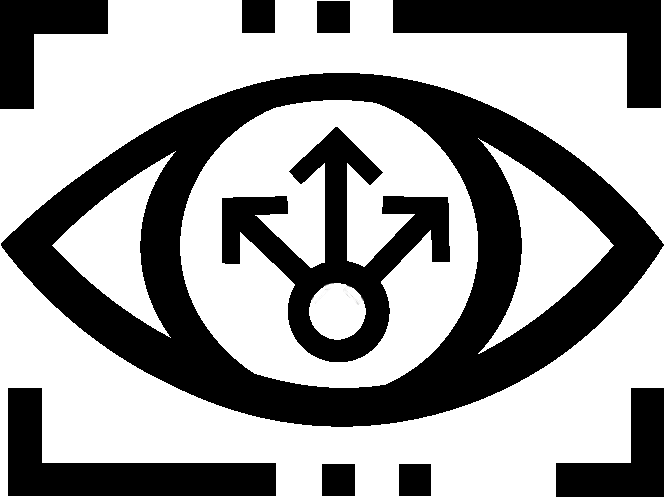

Beyond Binary Visions
Crafting Inclusive Career Paths and Shaping Tomorrows Leaders
Crafting Inclusive Career Paths and Shaping Tomorrows Leaders
Our interpretation of the theme "Create your Reality" involves helping underrepresented individuals learn how to get involved in competitive fields to take charge of their own future.

Craft Your Path By Clicking Below